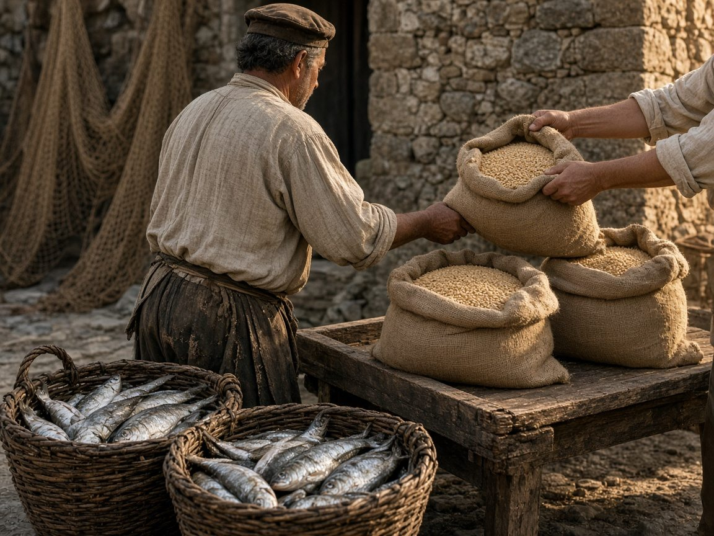
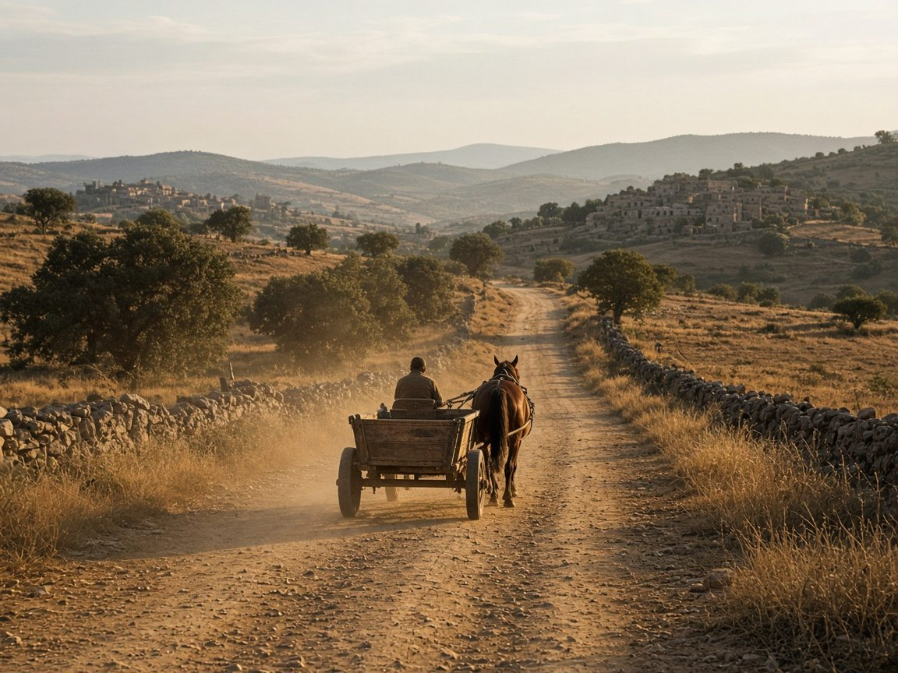
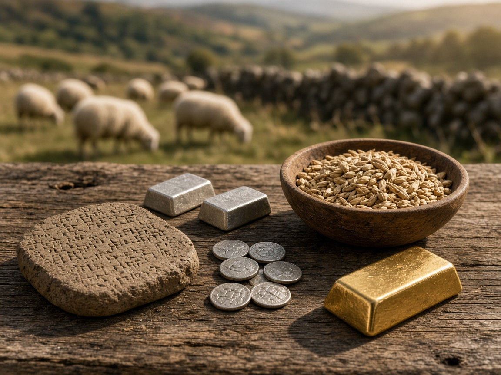

Hoy entramos en una tienda, miramos una etiqueta y sabemos cuánto cuesta un producto. Si queremos comprarlo, pagamos con dinero, tarjeta o incluso con el móvil. Nos parece algo tan normal que pocas veces nos paramos a pensar en cómo hemos llegado hasta aquí.
Un mundo sin dinero
Pero imaginemos por un momento que no existiera el dinero tal y como lo conocemos. Te sobra pescado y necesitas conseguir trigo, ropa o herramientas. Podrías buscar a alguien que tuviera lo que necesitas y estuviera dispuesto a recibir pescado a cambio. Y aquí aparece la primera dificultad: no siempre encuentras a esa persona, ni siempre necesita lo que tú ofreces.

¿Cuánto trigo equivale a una herramienta?
Además, los intercambios estaban condicionados por las distancias, el transporte y el tiempo. Si la persona con la que quieres cambiar vive a treinta kilómetros, tienes que desplazarte hasta allí. El producto necesitaba viajar, las personas también y el acuerdo dependía de que ambas partes estuvieran conformes. Hoy podemos enviar dinero de una cuenta a otra en segundos, aunque la mercancía siga necesitando un transporte físico.

Cebada, plata y tablillas de barro
Con los siglos, las distintas sociedades fueron desarrollando formas de comparar, contabilizar y reconocer el valor de los bienes. No todas lo hicieron de la misma manera ni siguieron un único camino. En algunas culturas se utilizaron productos como los cereales o el ganado; en otras, metales como la plata. También se llevaban registros de cantidades, obligaciones y deudas.
En Mesopotamia, la tierra entre el Tigris y el Éufrates, ya en el tercer milenio antes de Cristo, la cebada y la plata se utilizaban para pagar, calcular el valor de las cosas y conservar riqueza. Se concedían préstamos y se registraban las operaciones en tablillas de arcilla. La legislación de distintas épocas establecía intereses del 20 % para los préstamos de plata y del 30 % para los de cebada. Y hay un detalle revelador: la cebada era un alimento básico y sus préstamos solían estar relacionados con las necesidades de la población más humilde. El que menos tenía acababa pagando más.
¿Quién decide lo que vale cada cosa?
Y aquí está la cuestión: para intercambiar productos no basta con tener algo que otra persona quiera. También necesitamos una referencia que nos permita comparar su valor. ¿Cuánto trigo equivale a una herramienta? ¿Cuántos animales representan el valor de una cosecha? ¿Cómo podemos ponernos de acuerdo cuando los productos son tan diferentes? ¿Quién decide si vale más el animal que has cazado o el que has criado con esmero? ¿Te basta para dar de comer a tu familia esta semana? Esa necesidad de medir y expresar el valor fue una parte esencial de la evolución del dinero.
Pero todavía faltaba una pregunta: ¿qué podía servir como referencia para valorar tantas cosas distintas? A lo largo de la historia se utilizaron diferentes bienes y materiales. Algunos terminaron adquiriendo una importancia especial y, entre ellos, hubo uno que llegó a ocupar un lugar protagonista durante siglos: el oro.

¿Quién decide si vale más el animal que has cazado o el que has criado con esmero?
En el siguiente artículo veremos por qué este metal llegó a convertirse en una referencia de valor, cómo se utilizó como dinero y qué ocurrió cuando empezó a cambiar nuestra relación con él.
Fuentes
- Sobre Mesopotamia (la cebada y la plata como medio de pago y los intereses del 20 % y el 30 %): Museo de la Moneda del Banco de Italia, «Tavolette mesopotamiche», consultado el 13 de noviembre de 2026.
- Sobre las tablillas de arcilla mesopotámicas: The Metropolitan Museum of Art, colección en línea, consultado el 13 de noviembre de 2026.